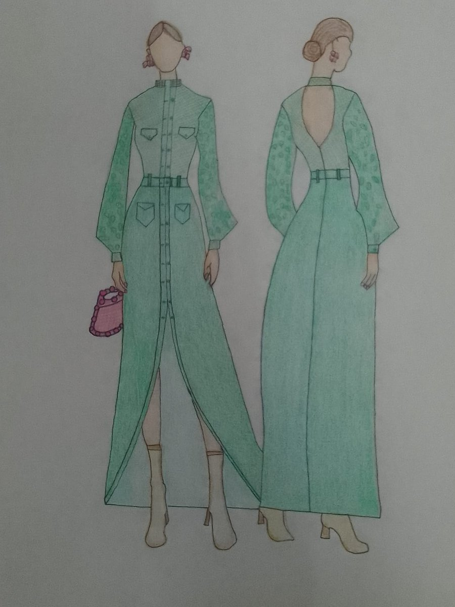
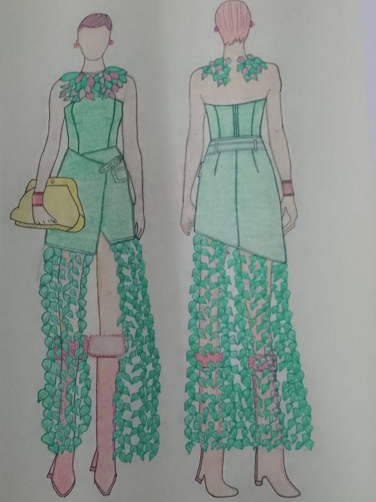
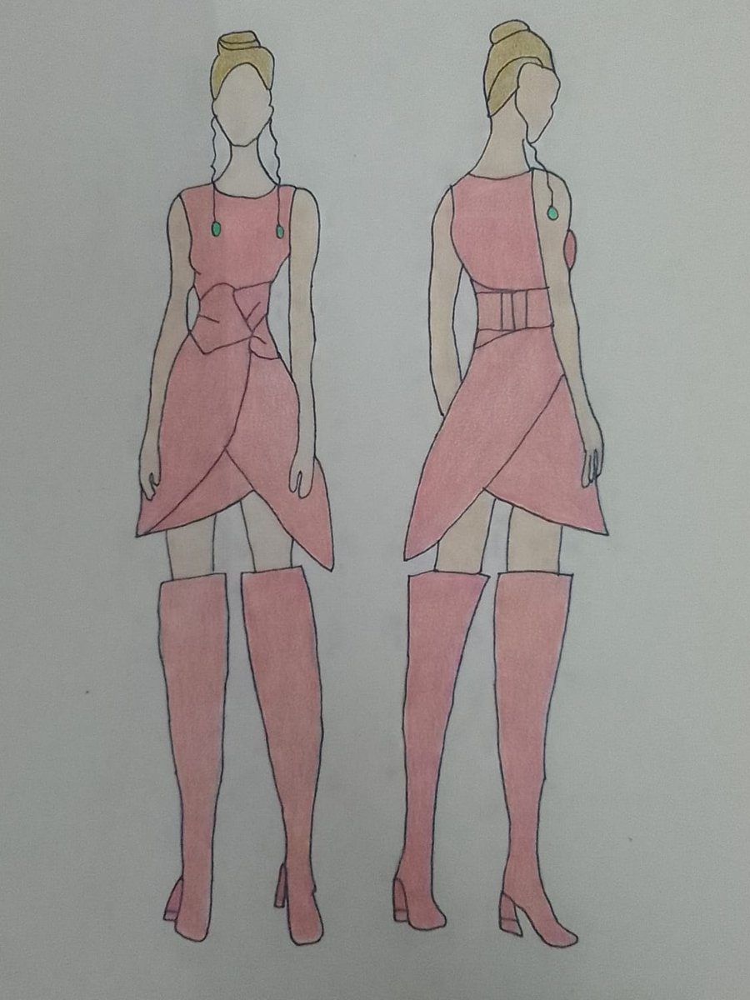
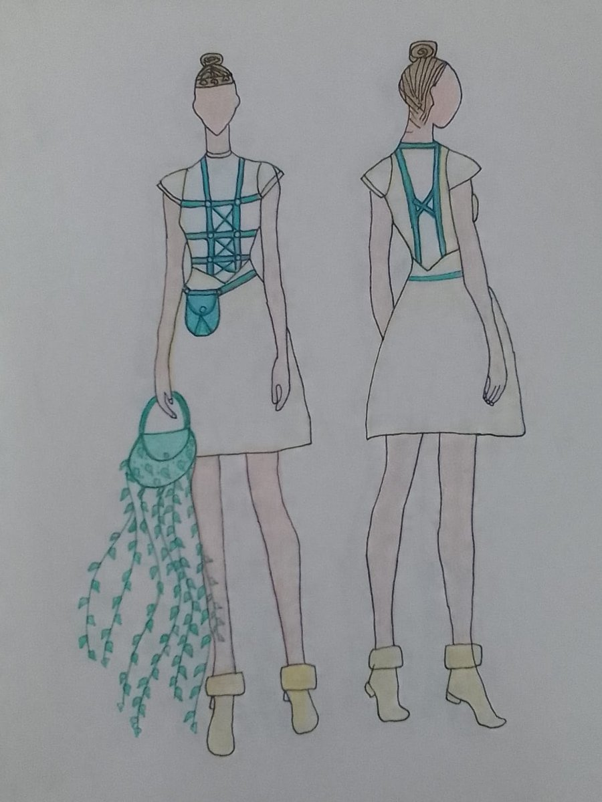
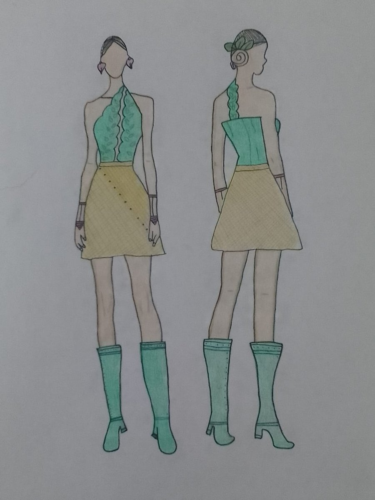
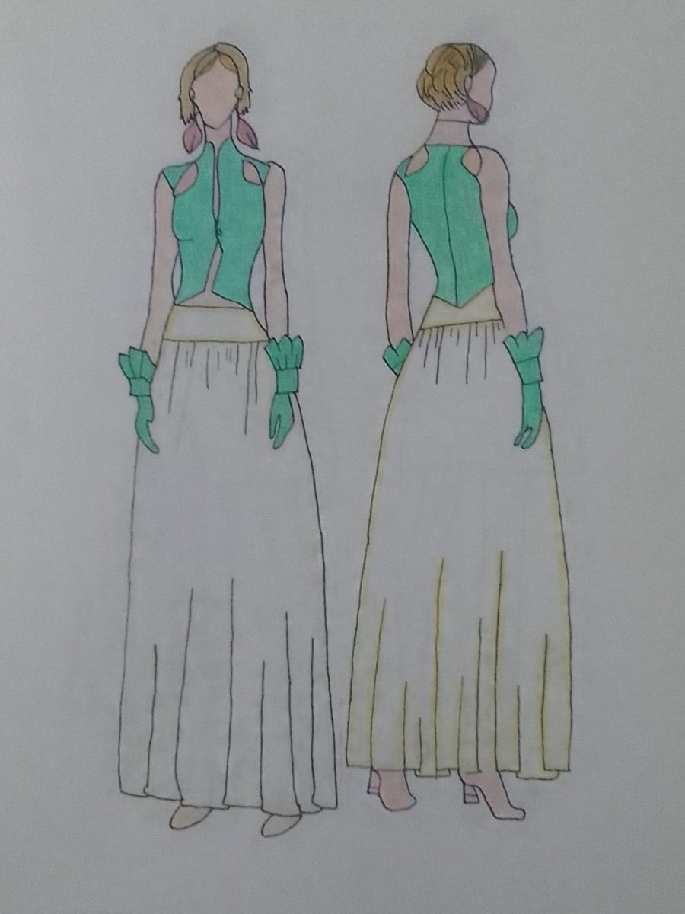

Diseño a medida
Vestidos y conjuntos únicos para graduaciones, bodas, quinceañeras y eventos especiales.
- Boceto y selección de telas
- Toma de medidas y prueba
- Confección y ajustes finales
Desde $350.000 COP
Estudio diseño de modas y creo prendas que combinan líneas suaves, texturas delicadas y mucha personalidad. Este sitio reúne mi trabajo, mis ideas y los servicios que ofrezco.
Ver mi galería Conocer serviciosHola, soy Alison Daniela Salcedo Parra. Desde niña dibujaba vestidos en los márgenes de mis cuadernos, y hoy convierto esos bocetos en prendas reales: primero el croquis, luego el patrón y por último la confección.
Mis bocetos actuales se inspiran en la naturaleza: hojas, enredaderas y verdes frescos combinados con rosas y amarillos suaves. También me atraen la moda femenina contemporánea y los acabados hechos a mano. Creo que la ropa debe ser cómoda, favorecer a quien la usa y contar una historia.
Este sitio es mi portafolio digital: una vitrina para mostrar mi proceso creativo y conectar con futuras clientas, colegas y marcas.
Una selección de mis figurines de moda, vistos de frente y de espalda. Cada imagen incluye su descripción: diseño, paleta y técnica.

Figurín frontal y posterior de un vestido largo estilo camisero en verde menta: cuello alto, botones al frente, bolsillos con solapa, cinturón y abertura central en la falda. Las mangas globo llevan un estampado de hojas y la espalda es abierta en V. Se acompaña con un bolso rosado de cuentas.
Paleta: verde menta y rosa. Técnica: ilustración de moda a mano.
Conjunto de corsé sin tirantes con cuello de hojas y falda corta cruzada con hebilla, de la que cae una cascada de hojas de enredadera sobre las piernas. Incluye clutch amarillo y botas en tonos rosados.
Paleta: verde, rosa y amarillo. Técnica: ilustración de moda a mano.
Vestido corto sin mangas en rosa con falda cruzada en forma de pétalo de tulipán y un lazo en la cintura. La espalda lleva faja ancha. Se completa con botas altas del mismo tono y aretes verdes.
Paleta: rosa y verde esmeralda. Técnica: ilustración de moda a mano.
Vestido blanco corto de línea A con un corpiño de tiras en verde azulado que forma un arnés, cinturón con pequeño bolso y un bolso del que cuelgan hojas de hiedra. Las botines llevan borde de pelo suave.
Paleta: blanco, verde azulado y amarillo suave. Técnica: ilustración de moda a mano.
Conjunto de top halter verde con borde ondulado y detalles de hojas, y falda corta amarillo miel con una línea diagonal de puntos. Botas verdes hasta la rodilla y un accesorio de hojas en el cabello.
Paleta: verde menta y amarillo miel. Técnica: ilustración de moda a mano.
Chaleco verde de cuello alto con aberturas en los hombros y falda larga y fluida en tono crema con pretina amarilla. Los guantes con volantes y los aretes de plumas aportan el toque final.
Paleta: verde, crema y amarillo. Técnica: ilustración de moda a mano.Cada pieza se trabaja contigo: escuchamos tu idea, tomamos medidas y avanzamos por etapas hasta tener la prenda lista.
Vestidos y conjuntos únicos para graduaciones, bodas, quinceañeras y eventos especiales.
Dale una nueva vida a tu ropa: ajustes, cambios de largo, rediseño de prendas y reciclaje creativo.
Figurines y bocetos digitales o a mano para marcas, emprendimientos y proyectos académicos.
Sesión personalizada para armar un guardarropa cómodo y coherente con tu personalidad y tu presupuesto.
Los precios son de referencia y pueden variar según la complejidad del diseño y los materiales. Escríbeme para recibir una cotización sin compromiso.